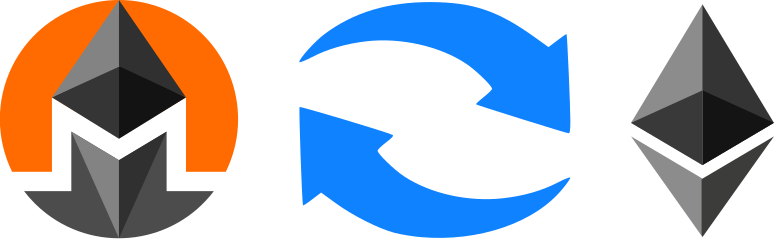
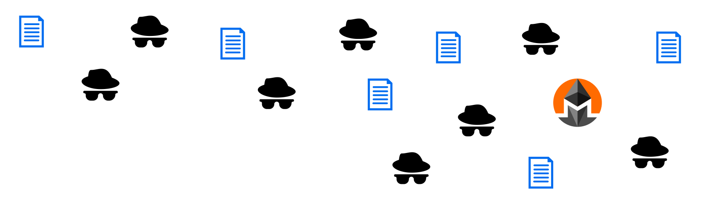

Untraceable
Everytime you spend MNR, the source is obscured amongst dozens of other transactions
within an impossible to trace web of anonymous transactions.
The receiver will never be able to discover who you are. Signatures will allow you
to prove you're the one who sent the funds, without giving up your public address.
Everytime you want to receive MNR, you can give them a new public address - and your identity never gets disclosed.
All of your receiving funds will seamlessly combine into the same wallet. Even if you choose to broadcast
a public address for anyone to send MNR to, each transfer to your public address will be encrypted on the blockchain
such that only you can decrypt it.
Exchange with Ethereum Instantly

If all of the above already exists using XMR, what's so special about MNR?
Simple: It's a Smart Contract, on Ethereum. You can easily use the market to generate an
new anonymous Ethereum wallet from your MNR, and spend it on other Ethereum-based
platforms using ETH coins that came from thin air. This is done entirely trustlessly.
This provides a service that is much easier to use than mixers, or inter-coin transfers
between ETH and XMR. You will not have to trust centralized exchanges to mix your ETH with others,
or trust them to give you XMR after you give up your ETH. Joining a mixer with BTC can
even be illegal if you receive a tainted coin. An MNR coin will
never be tainted, as both parties will always be cryptographically secured.
Even better, stay anonymous while only paying pennies in transaction fees. The decentralized exchange
will never cost you the fees that mixers will.

Smart Contract Compatible
MNR is an implementation of a modified Monero Protocol within the Smart Contract system of Ethereum,
with specific attention to interoperability with Ethereum Smart Contracts.
Anyone will be able to build Smart Contracts that exchange MNR to obscure their transaction
history - opening new opportunities for those who want to build anonymously interactive Smart Contracts.
The market found on this website is a great proof of concept for what is possible.
This market runs exclusively off of a smart contract located here.
Each trade that occurs will have its sender and receiver obscured.
MNR can be used as any Smart Contract's base coin, giving anonymity and
privacy in each transaction.
The entire repository is visible